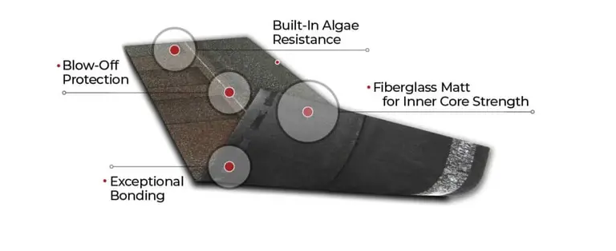
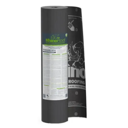
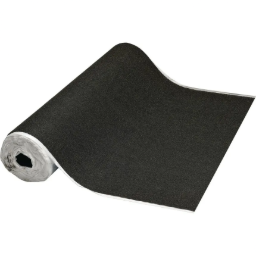
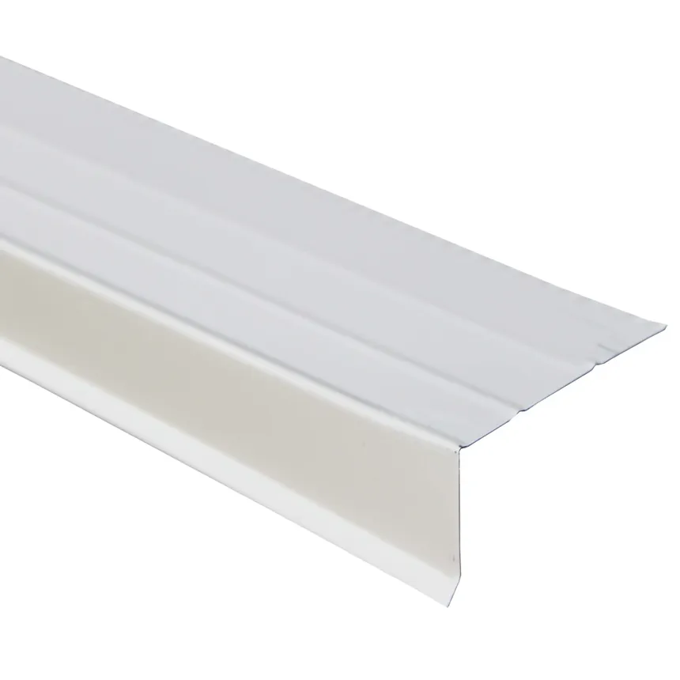

IKO Cambridge shingles are a popular choice for homeowners and contractors due to their durability, style, and affordability. These architectural shingles are designed to mimic the look of natural wood shakes, offering a classic, dimensional appearance without the maintenance issues of real wood.
They are known for their weather resistance, with a Class A fire rating and Class 4 impact resistance in select colors, making them suitable for areas prone to hail or strong winds.

Underlayment
Synthetic felt
Synthetic underlayment is a type of roofing material used as a secondary layer of protection between the roof deck and the roof covering. It is designed to provide enhanced water resistance, durability, and ease of installation compared to traditional felt underlayment.
Synthetic underlayment is typically made from long-lasting polymers, such as polypropylene or polyethylene, and is engineered to repel water, resist tearing, and withstand exposure to UV rays and moisture.

Ice and Water Shield
Ice and water shield is a crucial roofing component that provides protection against moisture and ice damage. It is a self-adhering, peel-and-stick substrate made of aggressive, rubberized asphalt adhesive, designed for protection under various roofing materials such as slate, tile, cedar shakes, metal roofing, and conventional asphalt shingles.
This roof underlayment ensures a robust defense against moisture and ice damage, with the adhesive backed by a cross-laminated, high-density polyethylene film, providing slip resistance and ease of application.

Flashing
Rake Edge
The rake edge is the sloped edge of a roof at the gable end, typically finished with a trim piece to protect the roof from wind and water damage.
It is part of a gable style roof, which consists of two roof sections sloping in opposite directions from the peak, allowing for the best flow of precipitation off the roof.
The rake edge serves to move rain and precipitation away from the roof, preventing water from getting into the fascia and the underlying roof decking of the home.
It can be exposed or closed and comes in various types, including overhanging exposed, overhanging and boxed in, and abbreviated or extended.
The rake edge is also designed to prevent insects, pests, and animals from getting into the roof and causing damage.
Additionally, it helps to prevent ice dams from creating by diverting water away from the gable and ridge ends.
The rake edge is an important part of the roofing system, providing a moisture barrier for the home's roofing system and protecting against water infiltration and insect infestations.

Drip Edge
A drip edge is a piece of metal flashing installed along the edges of a roof, where the roof's shingles or other roofing material meet the eaves and overhangs. It is typically installed under the roofing material, extends slightly over the edge of a roof, and includes a flange that bends away from the fascia. This creates a small gap between the roof and the edge of the building.
The purpose of a drip edge is to direct water away from the fascia and protect roofing material from wind-driven rain.
It helps channel water away from the roof and into the gutters, preventing water infiltration and potential rot or mold issues.